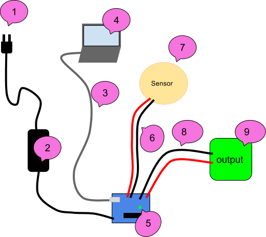
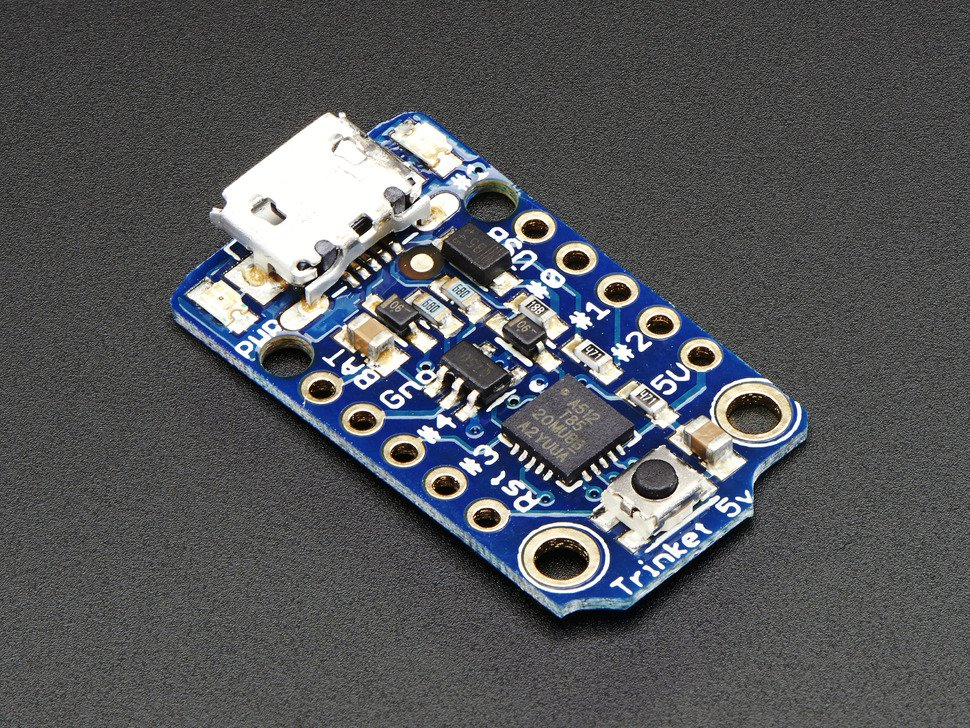

Robotic Arts Intro Fall 2017 (IA277.01)
- Instructor: Lucas Haroldsen (lharoldsen@mica.edu)
- Class Site: yasunaga.work/raif17
- syllabus: syllabus.pdf
- Resources: links.html
11/21: [work and planning day]
Project 2 : Final Project Idea drawings
Today, I will be meeting with each of you individually throughout the class time to talk about your final project.
We will discuss:
- ideas and drawings of your project
- a general schedule of progression
- materials and supplies for your project
- potential difficulties of your project
Troubleshooting Checklist
When we work with electronics, do not expect everything to work on a first try! There are times that things work on a first try but always expect a problem.
Troubleshooting is an important and an essential skill for working with electronics.
Here are some guidelines for troubleshooting projects. Ask few questions to yourself to start this process.
- Is this problem occurring for the first time? If so is there any difference?
- What did you change in your project last?
- Are there a parts that's working? If so what is working and what is not?
- Based on these questions, what do you think might be happening?
Now, when you get to troubleshooting with details of your project, I want you to pay attention to a couple of things.
- If anything is too hot to touch, smells burnet, or you see a smoke, unplug everything to and identify the where in your project is it coming from.
- Test your components from one end or another so you can eliminate working part of circuit as you go
- Take a break! We make some mistake often when we are working on the same thing for too long. Fresh eye always helps to see a problem

Above is an example set up for a testing sequence.
We will start at the plug and work our way up to the sensors and outputs.
Use a multimeter to test the circuit! Here is a refresher on how to use a multimeter
1: Wall
- Test if the outlet you are using is working by plugging other electronics in like lamps
- Try another outlet
- If you are using power strips or surge protectors, make sure they are turned on
- Test any extension cords you are using
- Some outlet has "reset" button
2: Power Supply / Battery
- Make sure your power supply is plugged in firmly to wall and arduino
- Check the label and make sure it is meant to provide in between 9V and 12V if you are plugging into 2.1 mm center positive plug
- Use multimeter to check the output voltage
- Use another power supply
- Make sure batter is not dead
3: USB cord
- It is more common then we expect that bad USB cable causes issues.
- Swap out the USB cable to make sure cable is good. If not throw it away!
4: Computer / Code
- Make sure you have selected right board to upload in arduino software (Tools --> Board)
- Make sure you have selected the port you are connecting (Tools --> Serial Port)
- Try to load simple sketch like Blink.ino sketch from example and see if it uploads
- Restart arduino software
- Restart computer
- Come back to coding troubleshooting after you confirm that arduino is working with simple code
5: Arduino
- Make sure no conductive objects are touching on the bottom of the board
- Press "Reset" button
- Try to load simple sketch like Blink.ino sketch from example and make sure TX and RX LEDs are lighting up during upload
- Make sure ON LED is lit up
- Double check all connection and there is no short circuit
- Remove all connection except for USB and try to upload Blink sketch
- Try another arduino
6: Wires to the sensors
- Bad solder can cause connection issues. Make sure your soldering connections are attached well
- Check continuity from one end to soldered connection to the sensor using multimeter
- Discard any wire that fails continuity test
7: Sensors / Components
- Check if its soldered well
- If you are using Digital input, upload the simplest sketch like Examples > Digital > Button
- If you are using Analog input, upload the simplest sketch like Examples > Analog > AnalogInput
- Swap out for identical sensor
8: wire to the output
- Again, bad solder can cause connection issues. Make sure your soldering connections are attached well
- Check continuity
9: output
- Check if it's wired correctly
- Power it without arduino if you can
- swap it with another one
Where to get stuff!
Remember to ckeck out links at the resource page!
Connectors
Another kind of connector
Screw Terminals
More Arduinos
There are many many kinds of microcontrollers we can program usign arduino IDE software!
Small and cheap but limited number of input and output :
Trinket

adafruit
Here is another with more pins available, Teensy
You need 5V or 3.3V to power those!
PCB milling
We can make our own circuit board and not have to carve it ourselves!
In the IA department, we have this Bantam Tools Desktop PCB Milling Machine
If you find Fritzing limiting (off course!) you can explore some alternative and more professional PCB and schematic software. While Fritzing is more user-friendly than other software, it lacks in availability in parts and flexibility.
KiCad (free!)
KiCad tutorials
Using KiCad with Bantam Tools
EAGLE
Using EAGLE:
tutorial for board layout(look at the tutorial for making a schematic drawings too)
Example Project
Using EAGLE with Bantam Tools
You can also engrave with just SVG files from any software that can output .svg files like Adobe Illustrator and Inkscape.
Engraving example workflow with Inkscape
Inkscape
Contents
Vilém Flusser - 1990 Lecture sobre la fotografía
More on Images by Flusser
Ralf Baecker
Christine Sun Kim, A Selby Film
HOMEWORK
Work on Project 2!
For next week, come to class with some studies and prototypes of your project.
It should be a simplified project that can get a sense of your project.
Remember, here is our schedule:
- 11/28 working prototypes and studies due
- 12/12 Project due / presentation
- 12/15 Documentation due